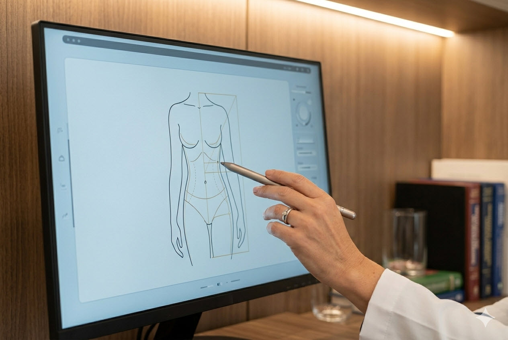

El Dr. Andrés Montoya Restrepo es cirujano plástico y estético egresado de la Universidad de Antioquia, con formación en cirugía plástica reconstructiva y estética. Su práctica se orienta a brindar valoraciones claras, acompañamiento profesional y procedimientos realizados bajo criterios de seguridad, proporción y naturalidad. Cada caso es abordado de forma individual, con énfasis en la escucha, la orientación responsable y la construcción de expectativas realistas.
Miembro de la Sociedad Colombiana de Cirugía Plástica
Más de 12 años de experiencia clínica
Valoración personalizada y enfoque responsable
Áreas de atención
Una atención profesional enfocada en valoración, criterio clínico y acompañamiento responsable.

Valoración y orientación prequirúrgica
Espacio de valoración profesional para analizar el caso, aclarar expectativas y orientar con criterio médico el proceso más adecuado.
Procedimientos faciales
Atención enfocada en procedimientos faciales con criterio estético y búsqueda de resultados armónicos, naturales y proporcionales.
Procedimientos corporales
Evaluación y acompañamiento en procedimientos corporales realizados bajo estándares de seguridad y planeación individual.
Resultados armónicos
Enfoque orientado a decisiones estéticas sobrias, proporcionales y coherentes con el perfil del paciente.
Acompañamiento profesional
Seguimiento claro y comunicación profesional durante las diferentes etapas del proceso.
Fortalezas de la práctica profesional
01
Valoración clara y personalizada
Cada caso se analiza de forma individual para orientar con realismo, criterio y claridad.
02
Seguridad y criterio profesional
La toma de decisiones prioriza la salud del paciente, la proporción y la responsabilidad médica.
03
Acompañamiento antes y después
La atención no se limita al procedimiento; incluye orientación y seguimiento profesional.
Entorno profesional
Atención clínica con enfoque humano y profesional
La práctica del Dr. Andrés Montoya Restrepo se desarrolla en un entorno clínico cuidado, orientado a la seguridad, la atención personalizada y el acompañamiento responsable. Cada valoración busca ofrecer claridad, confianza y una experiencia profesional desde el primer contacto.
Encuéntreme
Ubicación
Clínica del Country, Consultorio 412 Zona Norte Bogotá, Colombia
Disponibilidad
Lunes a Viernes: 8am – 5pm\
Sábados: 9am – 1pm (previa cita)\
Domingos: No disponible